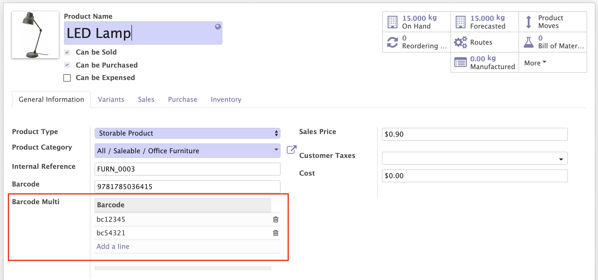
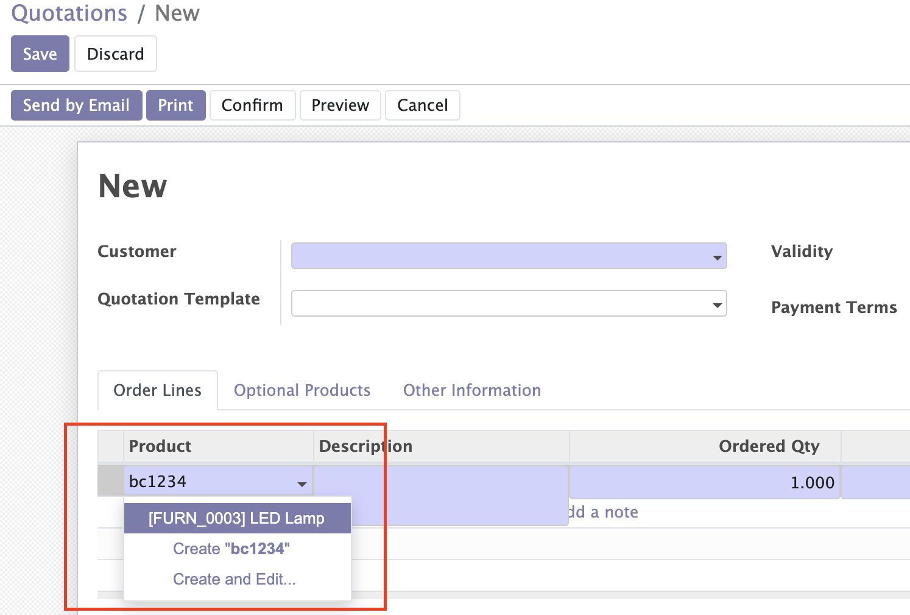
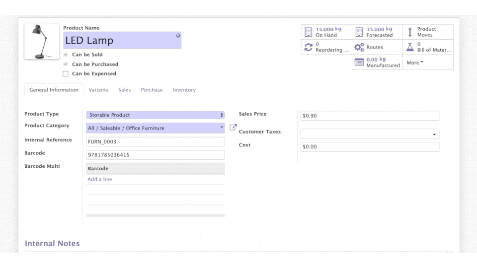

<section class="oe_container">
    <div class="oe_row">
        <div class="oe_span12">
            <h2 class="oe_slogan">Product Multiple Barcodes</h2>
        </div>
        <div class="oe_span12" style="text-align: center; margin-bottom: 5px">
            <p style="padding: 5px; font-size: 16px; font-weight: bold; background-color: yellow; display: inline">
                TO AVOID ANY ISSUES, PLEASE, USE ALWAYS LATEST VERSION FROM OUR GITHUB REPOSITORY - 
                <a href="https://github.com/ventor-tech/merp/tree/16.0">
                    https://github.com/ventor-tech/merp/tree/16.0
                </a>
            </p>
        </div>
        <div class="oe_span12">
            <div class="oe_row_img oe_centered">
                <p style="margin-left: 10%; font-size: 14px">
                If your products have multiple barcodes on the package you can add them into Odoo using this module.
                </p>
                
                <p style="margin-left: 10%; font-size: 14px">
                Then you will be able to find such products by these barcodes as in web Odoo...
                </p>
                
                <p style="margin-left: 10%; font-size: 14px">
                    ... as via the <a href="https://ventor.tech/ventor-mobile-app-for-odoo-inventory/">Ventor mobile app</a> installed on your handheld terminal
                </p>
                
                <p style="margin-left: 10%; font-size: 14px">
                    Learn more about warehouse optimization in our <a href="https://ventor.tech/blog/">blog</a>.
                </p>
                
                <p class="text-center" style="font-size: 14px"><a href="https://ventor.tech/">ventor.tech</a></p>
            </div>
        </div>
    </div>
</section>
